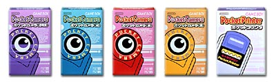
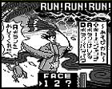
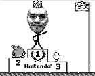
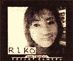
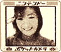

| お手持ちのゲームボーイがデジカメに!? シールプリンターに!? |
|  |
| ポケットカメラ 発売中 5,500円 ポケットプリンタ 発売中 5,800円 |
| すでにゲームボーイをお持ちの方にプレゼントを贈るなら、こんなギフトアイデアはいかが？ゲームボーイにセットすれば、まるでデジタルカメラのノリで遊べちゃう、トイ感覚アイテム『ポケットカメラ』です。 操作はゲームボーイの十字キーとＡ・Ｂボタンで行なうので、ゲームを遊ぶ感覚で使いこなせちゃいます。お子さんのファーストカメラにピッタリですネ。また、恋人にプレゼントすれば、ふたりのコミュニケーションツールがひとつ増えることになるでしょう。 トイ感覚といっても、けっこ〜本格的なんですヨ。撮った画像は30枚も保存可能。連続コマ撮りやタイマーなどの機能も充実していて、画像反転などの編集も自由自在です。画像を加工してゲームが作れちゃうところなんかは、じつにゲームボーイらしいでしょ？ |
|  |
| そして！別売の『ポケットプリンタ』を使うと、『ポケットカメラ』でプリントシールが作れちゃうんです。ふたついっしょに使いこなせば、楽しさ倍増ですヨ！ |
|  |
| ↓さらに詳しい情報はこちら 【http://www.nintendo.co.jp/n02/dmg/hardware/pocket_c/index.html】 |
 |
 |
|
 |